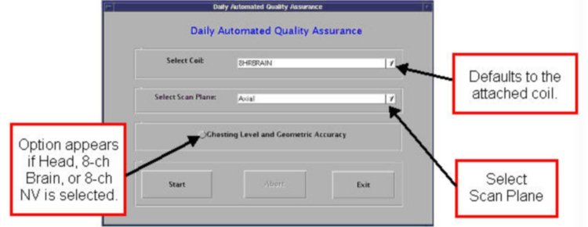

Operating Documentation
Direction 5440001-3, Rev# 6
Signa HDxt Service Methods
Module Version 2.0, Version Date 10/24/08
Operating Documentation |
The DAQA (Daily Automated Quality Assurance) check is a tool the customer will use to check or monitor system performance. DAQA replaces Head Quick-Check as the Customer Image Quality tool. The DAQA tool performs an SNR check on the coil that is currently connected to the LPCA. Another option is to check Ghosting and Grad-Cal when specific coils, such as Head Coil, 8-channel Brain, or 8-channel NV are selected.
To run DAQA, perform the following steps:
Attach the coil.
Insert the 6.69 in. (170 mm) Sphere or Head SPT ball into the coil.
| NOTE: | Centering is critical. Loader Shell must be used with standard head coil only. For all other coils do not use the loader shell. |
Landmark the coil and advance to Scan.
From the CSD (Common Service Desktop), go to the [Image Quality] section and select DAQA Tool. The GUI shown in Illustration 1 will display.
Illustration 1: Daily Automated Quality Assurance Menu

When using the GE Head Coil (8HRBRAIN) or 8 Channel NV, select the option of SNR or Ghosting Level and Geometric Accuracy.
The default or SNR option provides:
Signal
Noise
SNR
TG
Center Frequency
The Ghosting Level and Geometric Accuracy provides:
SNR
Ghosting Level
TG
Center Frequency
Dx (Gain Error)
Dy (Gain Error)
Dz (Gain Error)
There are no specifications for DAQA. The data is used to track performance over time.